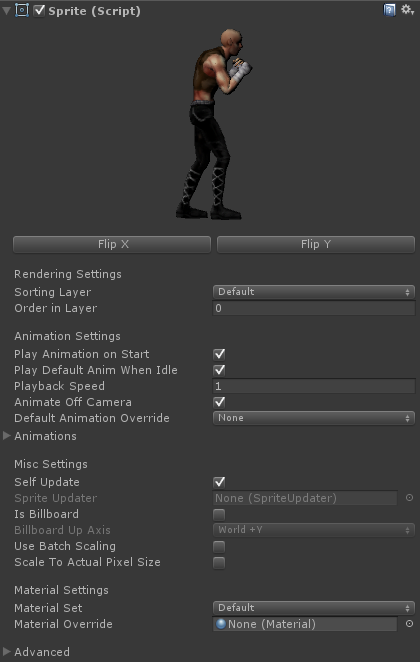

Sprites
A Sprite is a GameObject with a Sprite component that exists as an object in the scene or as a prefab. This is the sprite that everyone will see -- the game sprite.
- Sprites can be animated or static. Characters, objects, background elements, etc. can all be sprites.
- Sprites can have animated box colliders that animate along with the sprite graphics.
- Sprites can have animated locators that animate along with the sprite providing a way to attach objects to the sprite at specific points or to get position and facing data for use as spawning points for bullets, etc.
How Sprites Work
A Sprite consists of a planar mesh and a material with a texture atlas containing the frames of animation. During animation, the mesh's vertices and UVs are changed to display the current frame of animation. If defined, colliders and locators also animate along with the sprite animation. If the Sprite has more frames of animation than fit on a single atlas, it will spawn one or more child planes, each corresponding to a different material and atlas for the Sprite. During animation, the appropriate child planes will be activated or deactivated to display the animation seamlessly.
When a Sprite is instantiated, all animation data is loaded from its Master Sprite.
Creating Sprites
Sprites must be created in-scene from Master Sprites in the editor. See Using the Editor - Create and Assign Sprites for more information.
Scripting
All control over Sprites happens through scripting using the Sprite class. The class contains everything you need to animate Sprites and work with spawned colliders and locators.
Inspector
Sprites have some settings that are not loaded from the Master Sprite and are unique to each instance of that Sprite. You can set these options in the inspector when the Sprite is selected.

| Flip X | Flip the sprite in the X direction. All spawned colliders and locators will be flipped as well. | |
| Flip Y | Flip the sprite in the Y direction. All spawned colliders and locators will be flipped as well. | |
| Rendering Settings | ||
| Sorting Layer | The sorting layer this Sprite will be drawn on. This can be used to manually depth sort Sprites. You can edit sorting layers from the menu Project Settings -> Tags and Layers. (Unity 4.3+) | |
| Order in Layer | The render order within the current sorting layer. Higher numbers render in front. [-32768, 32767] (Unity 4.3+) | |
| Animation Settings | ||
| Play Animation on Start | Start playing the default animation on start. | |
| Play Default Anim When Idle | Always play the default animation when no animation is currently playing. | |
| Playback Speed | Sets the animation playback speed multiplier. 1 = normal speed. | |
| Animate Off Camera | Animate the sprite when off camera. | |
| Default Animation Override | Override the default animation with another animation. | |
| Animations | A list of all animations in this Sprite. This is just for reference. | |
| Misc Settings | ||
| Self Update | If checked, Sprite will run the Update cycle on its own. If unchecked, you must assign a SpriteUpdater to the Sprite which will run the update cycle on the Sprite. Using a SpriteUpdater to run the update cycle allows you to choose a different update cycle such as FixedUpdate or LateUpdate as well as allowing you to stop the update cycle on a group of Sprites for various purposes such pausing the game. | |
| Sprite Updater | The SpriteUpdater responsible for running the main update cycle on the Sprite. The SpriteUpdater must be chosen from the scene. | |
| Is Billboard | Set whether this sprite is a billboard. Billboards always face the main camera. | |
| Billboard Up Axis | Rotates the billboard sprite's transform to point its up direction vector in the direction hinted at by this axis. This is only a hint vector. | |
| Use Batch Scaling | Allows dynamic batching with sprites of different scales to reduce draw calls. Set the desired scale in the inspector using the Transform scale as usual. When gameplay begins or sprite is instantiated, Transform.localScale will be reset to 1,1,1 and the sprite will be scaled by modifying the mesh vertex positions instead. | |
| Scale To Actual Pixel Size | Scale the sprite to display at 1:1 pixel ratio in the main camera. *(See SpriteCamera if you want to render all Sprites at actual pixel size.) | |
| Activate Loc. Children Recursively | When a Sprite is activated or deactivated, locators will have their active state set as well. If you want all children of locators to have their active state set recursively when the locator is activated or deactivated, check this. Note: If unchecked, active state will be set only on first child objects of locator. If you are parenting Sprites to locators, generally you do not need to check this as the Sprite will automatically handle enabling or disabling its internal child objects. If you are parenting a nested Sprite hierarchy or other complex hierarchy to a locator, then you should check this box. Note: This option is only shown in versions of Unity below 4.0 and if the Sprite has locators. |
|
| Material Settings | ||
| Material Set | The current material set used by the sprite. The sprite will be drawn with the selected material on play. Note: The material displayed on the sprite in the scene view will always be from the default Material Set. When you press play, the sprite will be drawn with the chosen material. | |
| Material Override | Use a custom material on this Sprite. This can be useful if you need to switch materials dynamically without a predefined Material Set. * It is recommended that you make a Material Set in the editor and select it above instead of using a Material Override. Material Override incurs a draw call for each sprite instance of this sprite on screen because the override material is instanced for each sprite instance. However, Material Sets are shared among instances of the same sprite and do not incur extra draw calls. Note: The material displayed on the sprite in the scene view will always be from the default Material Set. When you press play, the sprite will be drawn with the custom material. | |
| Advanced | ||
| Master Sprite | The object reference to the Game Master Sprite used by this Sprite. This is displayed for reference only. |